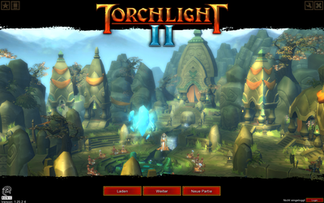
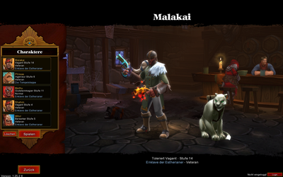
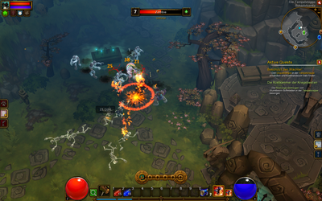

Torchlight 2
Dieser Artikel wurde für die folgenden Ubuntu-Versionen getestet:
Ubuntu 14.04 Trusty Tahr
Zum Verständnis dieses Artikels sind folgende Seiten hilfreich:
Torchlight 2 ist ein Hack-&-Slay-Rollenspiel ähnlich der berühmten Diablo-Serie. Das Entwicklerstudio Runic Games wurde von ehemaligen Diablo-Entwicklern gegründet. Die Musik stammt vom Diablo-Komponisten Matt Uelmen. Torchlight 2 pflegt trotz seiner dunklen Hintergrundstory einen farbenfrohen, cartoonähnlichen Grafikstil. Es bietet Mehrspieler-Partien für maximal sechs Spieler über das Internet und im LAN.
|  |
| Hauptmenü |
|  |
| Charakterwahl |
|  |
| Spielszene |
Installation¶
Humble Bundle 14¶
Hat man das Humble Bundle 14 gekauft, kann man das Spiel entweder über den bereitgestellten Steam-Key mithilfe des Steam-Clients installieren oder man nutzt das ebenfalls bereitgestellte Installationsskripts Torchlight2-linux-2015-04-01.sh. Nach dem Herunterladen macht man es ausführbar [1] und startet es [2], z.B. mittels der folgenden Terminalbefehle [3]:
cd /Pfad/zum/Ordner chmod u+x Torchlight2-linux-2015-04-01.sh ./Torchlight2-linux-2015-04-01.sh
Nach Abschluss des grafischen Installationsprogramms kann Torchlight 2 über den automatisch erstellten Starter geöffnet werden. [2]
Steam¶
Nachdem man den Spieltitel im Steam Shop  oder im Client erworben hat, kann es anschließend über letzteren installiert [4] und gestartet werden.
oder im Client erworben hat, kann es anschließend über letzteren installiert [4] und gestartet werden.
Tastenkürzel¶
Die folgenden Tasten und einige mehr (z.B. F-Tasten) lassen sich über die Optionen im Spiel an die eigenen Bedürfnisse anpassen.
| Torchlight II | |
| Taste(n) | Funktion |
 | Angriff |
 | aktiven Skill benutzen |
 | Kamera zurücksetzen |
| Mausrad | Kamera-Zoom |
| I | Inventar öffnen |
| C | Charakterwerte öffnen |
| S | Skills öffnen |
| P | Begleiter-Inventar öffnen (engl. Pet = Haustier) |
| alle Fenster schließen / ohne Fenster: Charakterwerte und Inventar öffnen | |
| M | Kartenansicht umschalten |
| + und - | Kartenausschnitt vergrößern und verkleinern |
| ⇧ + M | Kartenansicht zurücksetzen |
| Strg + M | Sichtbarkeit der Karte anpassen |
| Esc | Spielmenü aufrufen |
| W | Waffenset wechseln |
| Tab ⇆ | aktiven Skill wechseln |
| , und . | aktive Skills durchblättern |
| 1 - 0 | Schnellleisten-Feld 1 bis 0 benutzen |
| Y | den besten Gesundheitstrank trinken |
| X | den besten Mana-Trank trinken |
| ⇧ gedrückt halten | Die Spielfigur bleibt stehen, egal wohin geklickt wird (nützlich für Fern- und Stellungskampf). |
| Strg gedrückt halten | Die Spielfigur bleibt stehen, außer es wird ein Feind angeklickt (nützlich für Fern- und Stellungskampf). |
| Strg + F11 | Quicksave |
| J | Statistiken des Spiels |
Tipps & Tricks¶
Den Schwierigkeitsgrad nachträglich ändern¶
Grundsätzlich legt man den gewünschten Schwierigkeitsgrad beim Erstellen eines Spielcharakters unveränderlich fest. Es gibt allerdings zwei Wege, ihn nachträglich zu ändern:
Temporäre Änderung: Der feste Schwierigkeitsgrad wirkt nur in einem Einzelspieler-Spiel. Also startet man mit diesem Charakter ein Mehrspieler-Spiel. Für dieses kann man den Schwierigkeitsgrad frei wählen. Jeder Spielcharakter kann unabhängig von seinem eigenen Schwierigkeitsgrad jedem Mehrspieler-Spiel beitreten, also z.B. ein „Normal“-Charakter einem „Expert“-Spiel.
Permanente Änderung: In der Textkonsole (siehe unten) kann man den Schwierigkeitsgrad des gerade spielenden Charakters mit dem Befehl
setdifficulty Xändern. X ist mit der Zahl des gewünschten Schwierigkeitsgrades zu ersetzen: 0 = Easy, 1 = Normal, 2 = Veteran, 3 = ExpertAchtung!
Diese Änderung markiert den Charakter permanent als modifiziert. Dieses wird anderen Spielern durch ein Symbol am Charakterportrait angezeigt. Manche Spieler könnten sich daran stören, weil der Charakter in unfairer Weise modifiziert sein könnte (Cheating). Wen das nicht stört, kann die Änderung unbekümmert durchführen.
Textkonsole / Cheats¶
Torchlight 2 besitzt eine Textkonsole, in der man verschiedenste Werte des Spiels beeinflussen kann. Um sie zu aktivieren, bearbeitet man die Datei ~/.local/share/Runic Games/Torchlight 2/settings.txt. In dieser setzt man die Option CONSOLE: 0 auf CONSOLE: 1 und startet Torchlight 2. Nun hat man mit der Taste
Einfg Zugriff auf eine Textkonsole im Spiel.
Liste der Konsolenbefehle:
GOD : Toggles invincibility on/off. GODSPEED : Toggles invincibility and extra speed on/off. LEVELUP : Gain XP to level up. AIFREEZE : Toggles Monster AI on/off. PLAYERNOTARGET : Toggles Monster targeting on/off. (Ghost Mode) KILLALL : Kills all monsters. ALWAYSCRIT : Player always hits critically. ASCEND : Goes down a floor. DESCEND : Goes up a floor. MONEY ### : Sets amount of gold to “###”. ALLITEMS : Spawns all items. CLS : Clears console history. SETTIME ### : Sets the time of day to “###”. SETTIMESCALE ### : Sets the timescale for time of day to “###”. ROOM : Returns the room the player currently is in. FPS : Shows the frame rate and other information. SPEED : Toggles additional speed for the character. DAMAGE SHAPES : toggles damage shapes on and off. STATPOINTS ### : Gives you stat points set to “###”. STRENGTH ### : Gives you melee points set to “###”. DEXTERITY ### : Gives you ranged points set to “###”. MAGIC ### : Gives you magic points set to “###”. DEFENSE ### : Gives you defense points set to “###”. ALLSTATS ### : Gives you the count to all stats to “###”. FAME ### : Gives you fame points set to “###”. SKILLPOINTS ### : Gives you skill points set to “###”. SETPETLEVEL : Sets the pet’s level set to “###” DISABLEPET : Disables/enables the player’s pet. RELOAD : Reloads textures. PATHING : Toggles pathing debug display. COMBATLOG : Toggles combat log. SOUNDDEBUG : Toggles sound debug. CLEARHISTORY : Clears level history. MISSILETRAILS : Shows missile trails. DEBUGLOGIC : Toggles if the logic events are fired to the ogre log. NOXP : Player doesn’t gain XP. ANIMATIONSPEED ### : Changes the animation of everything to match the FPS. HURTME ### : Reduces the player and the player’s pet HP by the given percent. RESETSTATS : Resets the player’s stat points. RESETSKILLS : Resets the player’s skills. RESETPLAYERLEVEL : Resets the player’s level to 1. RESETPETLEVEL : Resets pet’s level to 1. RESETPLAYER : Resets player’s stats, skills, and level. CAMERADISTANCE ### : The ### the camera will be from the player. DIFFICULTY: Displays the current game difficulty. SETDIFFICULTY ### : Sets the current difficulty, values range from (0) Easy to (3) Very Hard. SKILL name/index = type just skill to see a list of skills. Type the number or the name of the skill to make active on the player. SKILLTEST = different in the command skill, this will allow you to execute any skill even if it wasn’t intended for your character. ITEM index,count = the params are option. Type items to see indexes of all monsters in the game. ITEM itemName,count = creates count of itemName. ALLITEMS unittype = spawns all items of a given unittype (use “_” for spaces) IDENTIFYALL identify all items in the player’s inventory. ANY index,count = the params are option. Type any to see indexes of all units in the game. EDITOROBJECT objectName,count = Creates an object from the editor for testing memory use. UNIT unitName,count = creates a unit by name and count. SPAWNCLASS spawnclassName,count,level = just type spawnclass to see all the spawn classes listed. Pass in Zero or a negative number for level will use the dungeon depth as the level. MONSTER index,count = the params are option. Type monster to see indices of all monsters in the game. MONSTER monsterName,count = creates count of monsterName MONSTERMEM MonsterName,### = the params are option. Creates and deletes a monster for memory testing. MODEL modelpath,### = the params are optional. Creates and deletes a model for memory testing. DUNGEON dungeonName = sets the current dungeon CLEANUP = releases unused resources CHARGEBARMULT = makes the charge by X percent easier to fill UNITTYPES = displays all unittypes RESTARTLEVEL = restarts the current level QUESTS = lists all quests QUESTACTIVE questName = sets a quest to active QUESTSHOWACTIVE = Shows all the players active quests QUESTCOMPLETE questName = sets a quest to complete QUESTRESET questName = resets a quest to not be active or complete QUESTSCOMPLETE = Lists all the quests complete SHOWBLOOD = toggles blood particles ACHIEVEMENTS = Lists the achievements and if they are complete MEMORY = Dumps the memory allocation to the console. TAGS = Dumps all tags used in the level and what got created. ITEMBYMESH = Pass in part of a mesh name to spawn all items with that contain the string you passed. UIREFRESH = forces a refresh on the UI. MODIFYSIGHT = changes the sight distance of monsters activation. Pass 0 to reset. MODIFYMOTION = changes the motion distance of monsters activation. Pass 0 to reset. CHARACTER COUNT = returns the number of characters updating in the level PLAYERANIMATION = Dumps to the console which animation the player is playing and stopping. DOLLYMIN mindis = The min dolly distance for interaction. BLOOM = Toggle fullscreen bloom. LOGCONSOLE = Show the logging console. CONNECTIONDATA = Dump a connection data file. ADDFRIENDBYUSER = Add a friend by username or email. DROPCONN = Drop the given connection id.
Achtung!
Viele dieser Befehle markieren den Charakter permanent als modifiziert. Dieses wird anderen Spielern durch ein Symbol am Charakterportrait angezeigt. Manche Spieler könnten sich daran stören, weil der Charakter in unfairer Weise modifiziert sein könnte (Cheating). Eine Liste der vermutlich markierenden Befehle gibt es im Runic Games Forum .

Infobox¶
| Torchlight II | |
| Genre: | Rollenspiel |
| Sprache: |     |
| Veröffentlichung: | Windows: 20. September 2012, Linux: 4. März 2015 |
| Publisher: | Runic Games, in Deutschland Daedalic Entertainment |
| Systemvoraussetzungen: | 2,0 GHz, 2 GB RAM, 1,7 GB Festplattenspeicher, 256 MB OpenGL 2.0-kompatible Grafikkarte, Ubuntu 12.04 LTS |
| Medien: | Download |
| Läuft mit: | nativ |
Links¶
Torchlight Wiki
für Torchlight 1 und 2 auf wikia.comRunic Games Fansite
– Webseite der TL2-Community mit vielen Informationen und Modifikationen (Mods)
- Erstellt mit Inyoka
-
 2004 – 2017 ubuntuusers.de • Einige Rechte vorbehalten
2004 – 2017 ubuntuusers.de • Einige Rechte vorbehalten
Lizenz • Kontakt • Datenschutz • Impressum • Serverstatus -
Serverhousing gespendet von